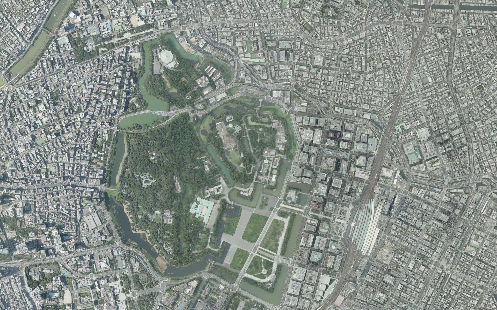
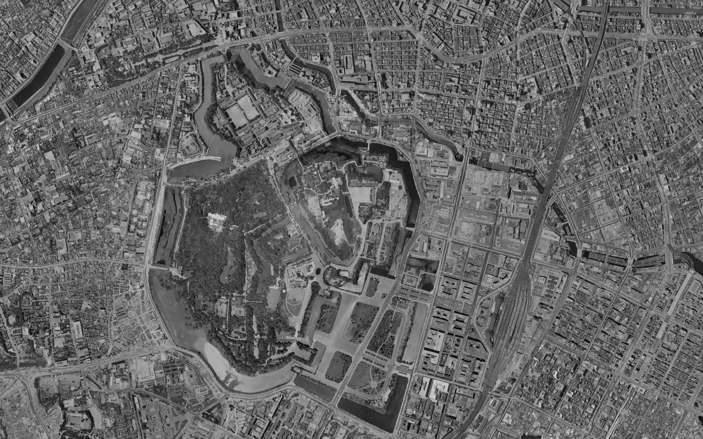

No. 1936 — NOW
昔の地図と航空写真を、
今の地図に重ねて見る。
現在の地図の上に、昔の地図や過去の航空写真を重ねて表示できる無料のWeb地図。見たい場所を開くだけで、そこが昔どんな姿だったかを見比べられます。


1936 NOW現在の地図の上に、昔の地図や過去の航空写真を重ねて表示できる無料のWeb地図。見たい場所を開くだけで、そこが昔どんな姿だったかを見比べられます。


1936 NOW